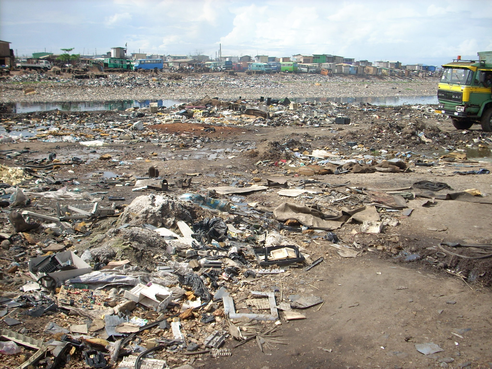

While it is important for us to practice keeping our neighborhood in its best quality, it is also important to be aware of our ecosystem as well. Most people don't know that the trash that we throw out will end up in sewers and then proceed to make its way to rivers and lakes. This also applies when hundreds of trash are tossed away in the shoreline of these body of waters. All this have negative impacts in these ecoystems and badly affect the organisms living in these habitats.
5 ways we can do to prevent the safety of ecosytems from being exposed to our trash.
-Become aware of what an ecosystems will result from over-exposure to trash and garbage
-Research and support local organisations that give aid in helping out the environment
-Donate some money to these organisations and help out with their cause.
-Plan and visit a wildlife reserve to know more about how the ecosystem works and how important it is to nature.
-Encourage people to avoid throwing their trash near shorelines.
Original photo taken by Blacksmith Institute.Pure Earth.Licensed under CC by 2.0
Go to page 4